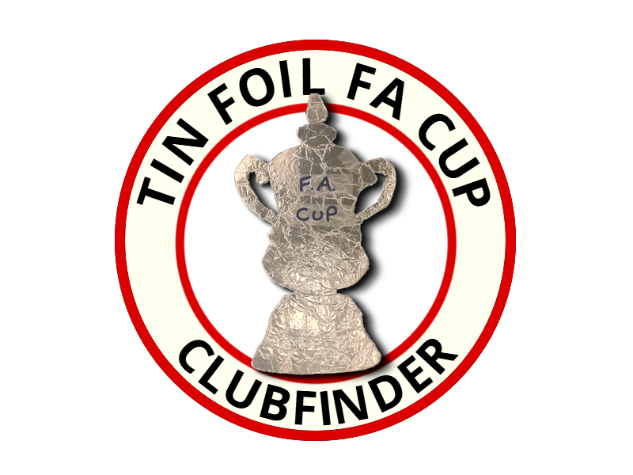

Start yourTin Foil FA Cupjourney here
Experience the magic of yourown Cup Run as you try toget to Wembley — for real!
Start CampaignTin Foil FA Cup supports Grassroots Football in the best way possible — Through the TurnstilesSupporting grassroots football — Through the Turnstiles